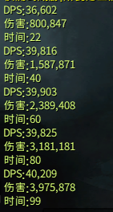
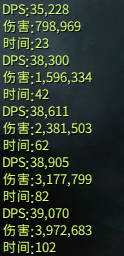
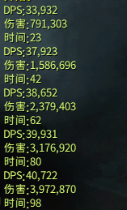

症状长矛丁真（最终优化版）
|长矛3，长矛3二段，长矛2，手雷4，手雷5，手雷4黑=手雷5黑=退出手雷，超导纹章，长矛5，普攻|超频纹章|
长矛3,3,450|长矛3二段,3,300|长矛2,2,450,e,120,2,750|手雷4,4,750|手雷5,5,750|手雷4黑|手雷5黑|退出手雷,e,120|超导纹章,q,400|长矛5,5,1100|普攻,1,100|超频纹章,t,1
[&DQMGJyY5RjUNGwAADhsAAIYAAAAQGwAACRsAAAAAAAAAAAAAAAAAAAAAAAABCQEA]
装备：毒蛇，符文：陷阱，法印：大地、地能/渴求，古物：碎层
————————————————————————————————————————————————————————————————————————————
食物：锦鲤蛋糕 扳手：剧毒水晶 灌注；90症状伤害
全局加速 1，可以根据自己的延迟来更改全局加速
极简优化了循环，把手雷2黑删除了，发现判定快了很多，如果手雷2放不出来就退出手雷包，就改成手雷2黑=手雷4黑=手雷5黑=退出手雷包，目前我没出现过
优化在好也架不住网络延迟的绝杀，最终优化到这地步了。



评论列表（16）
有的时候一个技能cd好了，按不出来就直接进行下一部操作了，这样是加连点还是加延迟？
退出手雷要怎么取色啊 总是不切出去
手雷4黑，5黑，那个地方不太懂。取完色后运行起来也打不上去，也不知道哪里去问题了
黑就是CD状态 你按下手雷四再取色
大佬可以开发一下双包症状丁真吗。挺好的，我在你的基础上把延迟稍微调一下标灌可以打到41-42k
工程师的普攻其实可以不放进循环里，我发现自从上一次更新之后工具包里的普攻能自动攻击后循环会变得很卡，以为是软件的问题，之后把普攻给去掉了，发现切包的时候技能释放就流畅了，也没有卡手的感觉了。究其原因是高频率111会导致2345卡手放不出来因为一直有前摇
没有进手雷包的取色吗？
不需要，因为长矛2绑定了进手雷包，和手雷2， 所以进手雷包和手雷2 不需要取色
你这个复制进去不对啊
超导纹章|长矛3，矛3二段，长矛2，手雷4，手雷5，手雷4黑=手雷5黑=退手雷包，超导纹章，长矛5，普攻，|超频纹章|
超导纹章,q,400|长矛3,3,450|矛3二段,3,400|长矛2,2,450,e,120,2,750|手雷4,4,750|手雷5,5,750|手雷4黑|手雷5黑|退手雷包,e,120|长矛5,5,1100|普攻,1,10|,手雷4黑=,|超频纹章,t,1
[&DQMGJyY5RjUNGwAADhsAAIYAAAAQGwAACRsAAAAAAAAAAAAAAAAAAAAAAAABCQEA]
装备：毒蛇 符文：陷阱 法印：渴求、大地 古物：碎层
你在试试 文章的那个，好像没问题了
大佬牛啊，坐等优化，我去测个别的职业
退雷包不用加全变黑的判定，食物还是吃盘装牛肉，刚刚写了一个0灌41.5K，还没优化
盘装牛肉和锦鲤蛋糕是一样的， 盘装牛肉还很贵97银，锦鲤蛋糕就1银， 41.5的发出来，学习下，我只能保持在40
期待大佬的后续优化
症状玉操作量不比契灵小，但蔑视很差